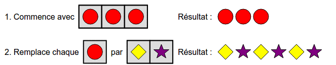
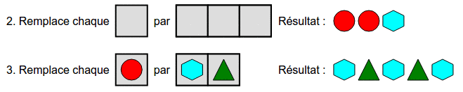
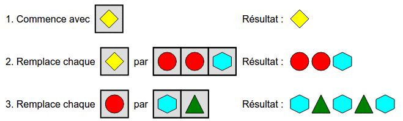
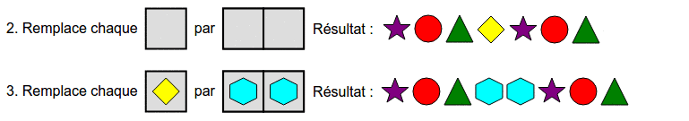
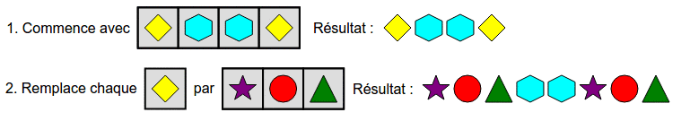
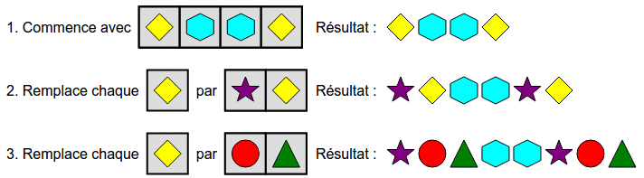

Ersättning
Dra formerna in i de grå cellerna för att
bygga ett "program" som producerar målet.
Dra formerna in i de grå cellerna för att
bygga ett "program" som producerar målet.
Obs! Bilderna motsvarar inte nödvändigtvis dem i din egen lösning, men principen förblir densamma. Vi ber om ursäkt för att texten i bilderna är på franska.
Observera att det önskade resultatet består av tre upprepningar av samma par av former: en romb och en stjärna.
Vi kan välja en form, någon, till exempel den röda cirkeln, och sätta tre kopior i rad. I nästa steg, ersätt varje kopia av denna form med en romb följt av en stjärna.

Ett bra tillvägagångssätt är att börja från slutet: vi ser att slutresultatet består av två identiska par (sexhörning, triangel), och sedan en sexhörning. Eftersom den sista ersättningen ersätter en form med ett par, inser vi att vi måste låta två identiska former, exempelvis cirklar, ersättas med de två paren (sexhörning, triangel). Det sista steget ser alltså ut så här:

I det föregående steget kan vi börja med vilken form som helst (till exempel en romb), och sedan ersätta den med önskat mönster inför det sista steget (rund, rund, sexhörning):

Låt oss observera det önskade resultatet: det består av ett block med tre former (stjärna, cirkel, triangel) följt av två sexhörningar och slutligen följt av samma sekvens av tre former som i början (stjärna, cirkel, triangel).
Man kan försöka, i steg 3, att ersätta en form med två sexhörningar. Men om vi börjar på den vägen kommer det inte att finnas tillräckligt med steg:

Vi är därför tvungna att utföra steg som ersätter flera former samtidigt. Faktum är att det vi egentligen vill göra är att ersätta en form direkt med en sekvens av tre former (stjärna, cirkel, triangel). Om vi hade möjlighet att göra det, kunde vi enkelt lösa problemet:

Men vi kan faktiskt få en liknande effekt genom att dela upp den i två steg: det första ersätter varje romb med en stjärna följd av en romb, och det andra ersätter sedan de nya romberna med en cirkel följd av en triangel. Detta ger oss följande lösning:

Denna uppgift använder mekanismen sök och ersätt och låter dig tänka på vad som händer när du utför flera sök-ersättningsoperationer i rad.
Sök och ersätt är mycket användbart, särskilt i ordbehandlingsprogram.